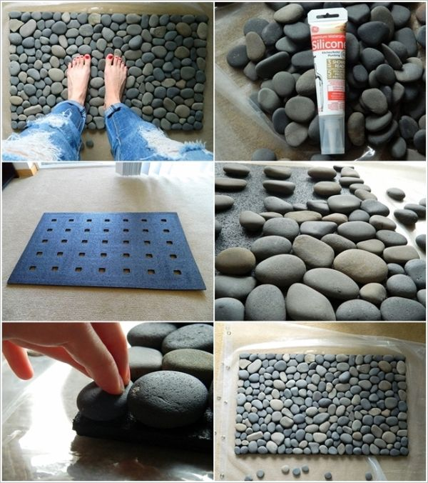
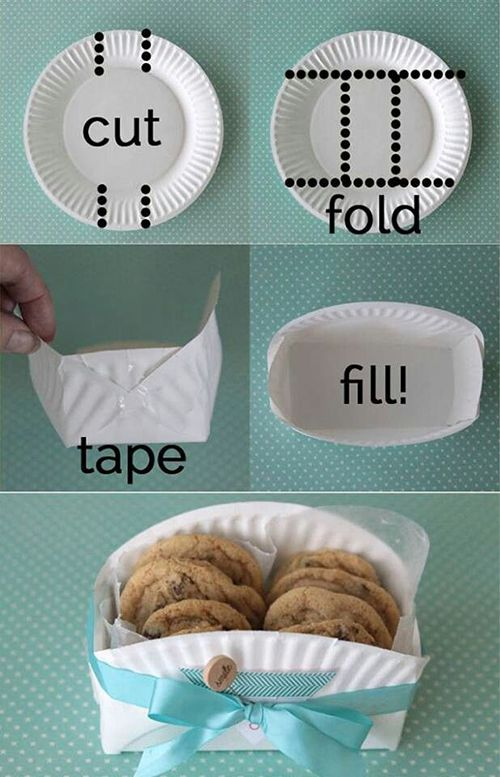
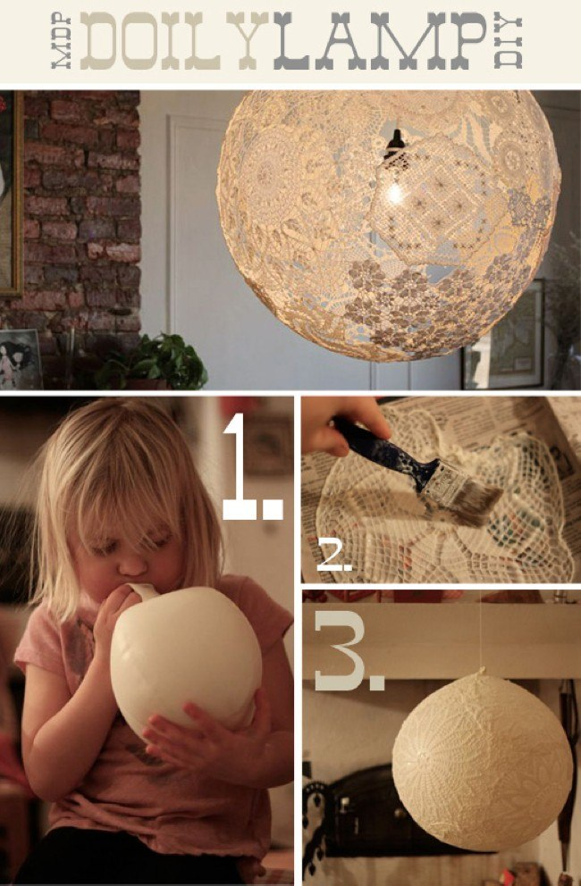
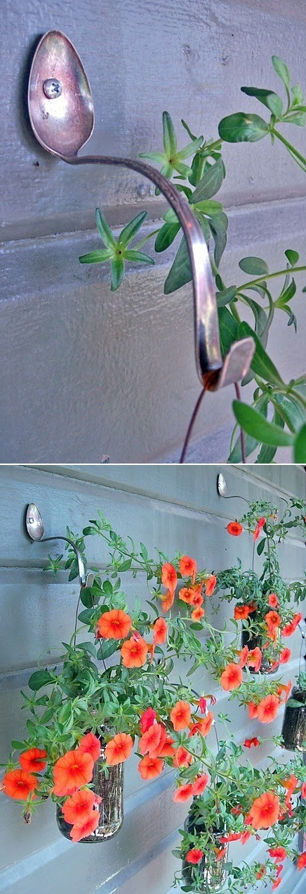
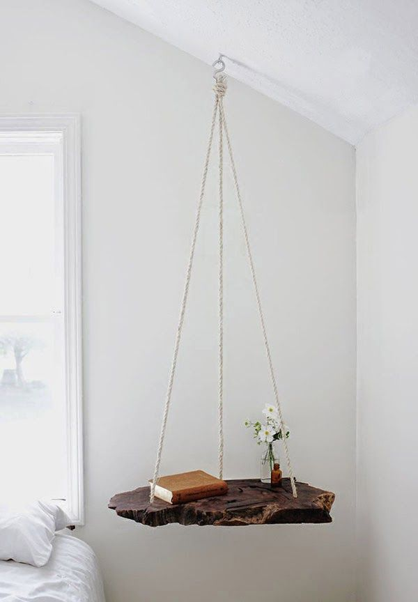
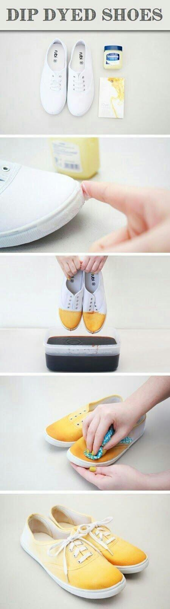
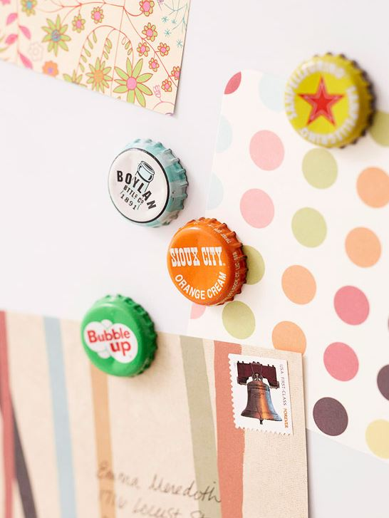
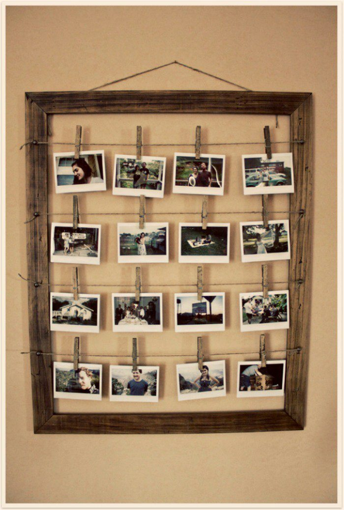

River Stone Door Mat
Buy yourself a plain door mat with no decoration. Make sure it has holes to let water drain through. Gather a bunch of river stones (wash them before use) and use silicone to attach them to the door mat. Let that dry and you’ll now have a surprisingly good-feeling door mat underneath your feet. 
Paper Plate Gift Basket
This simple and easily made paper plate basket is perfect for family occasions such as weddings. All you will need is a pair of scissors, a paper plate, a decorative ribbon and scotch tape. Follow the instructions below and wow your friends. 
Decorative Lace Lampshade
An old trick, but it still works wonders. Blow up a balloon, apply some wallpaper glue to some lace and stick it around the balloon. Once that is done, leave it to dry. Pop the balloon when it’s dry for an elegant-looking lampshade. 
Unique Plant Hangers
Simply drill a hole in an old table spoon, bend the spoon to give it the desired curve and nail the spoon to a wall. Using a thick, long spoon will yield better results. If you are unable to bend the spoon, soften it by using a propane torch on it. 
Hanging Book Shelf
Drill three holes in a slab of wood, thread some rope through and tie a knot at each end. Hang the suspended slab of wood via a hook screwed into a ceiling beam and you’ve got yourself a beautiful alternative to a table. 
DIY Dyed Shoes
I can’t emphasise enough the importance of the Vaseline with this DIY project. The Vaseline will keep the dye off the rim of your shoes, so it only dyes the fabric. Apply the dye and smudge away. 
Bottle Cap Magnets
Collect your favourite bottle caps and repurpose them into fun fridge magnets. Simply apply hot glue to a magnet then stick that onto the inside of a bottle cap. 
Creative DIY Lantern
Make use of all those beer and soda cans you throw away by creating a homemade lantern. Use masking tape at the top and bottom for guidance on where to cut. Slice down the can leaving three centimeters between each slice. Squish down slightly and insert a candle. For extra decoration, spray paint the lantern.

Wired Picture Frame
No need to throw away old picture frames. Repurpose them by taking off the back, adding wire or string across the entire frame and pegging your favourite pictures. 